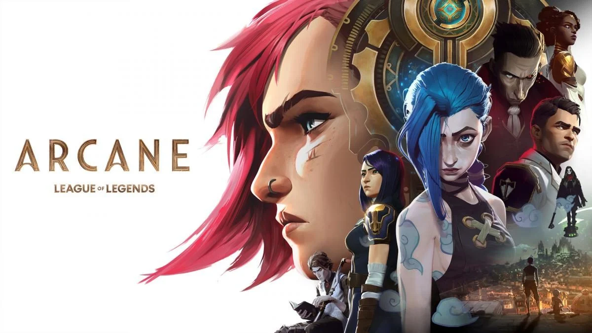
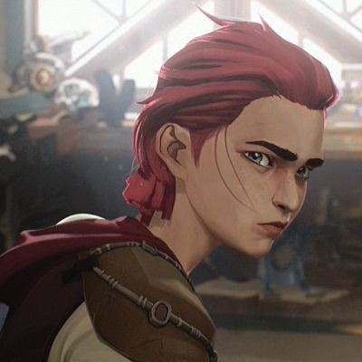
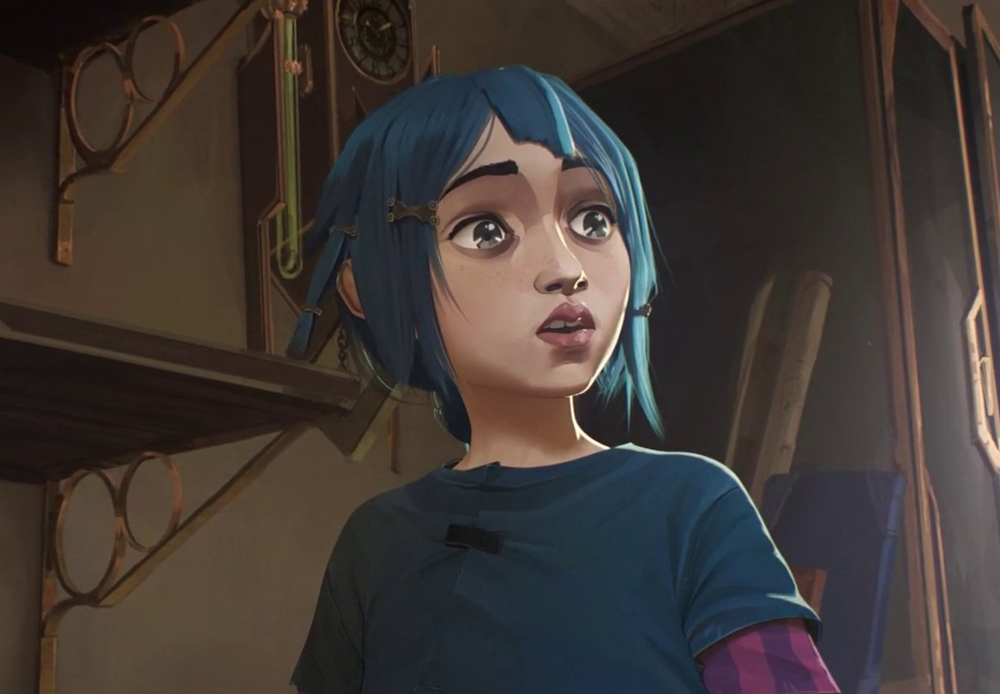
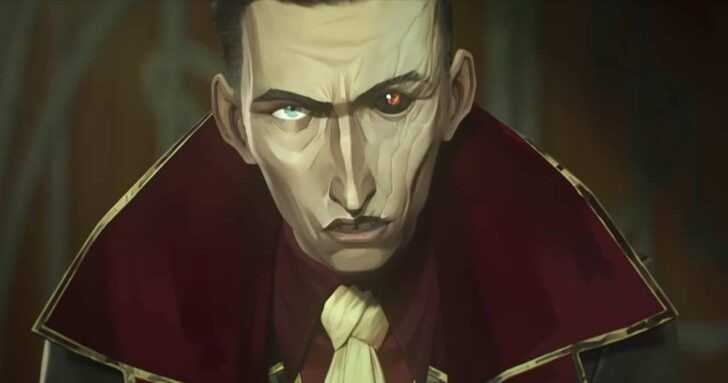
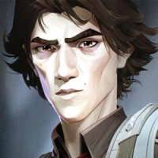
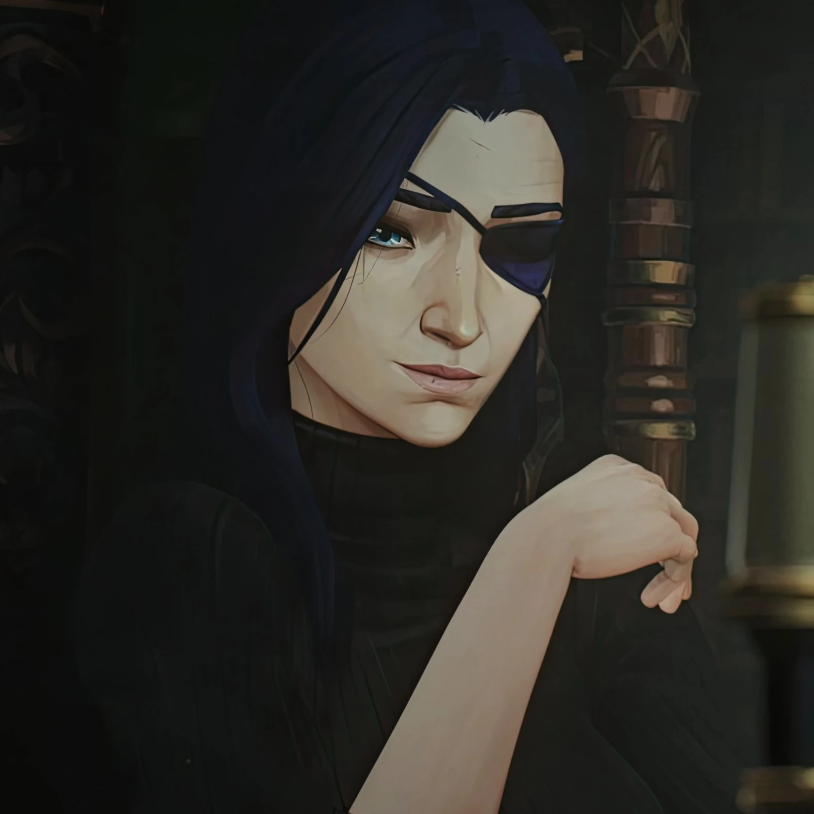

Мультфільм, який затьмарить будь-яке кіно
Усе починається з іскри. На тлі епічного протистояння між утопічним містом прогресу Пілтовером та суворими підземеллями Зауна розгортається драматична історія двох сестер. Анімаційний шедевр «Аркейн» занурює у світ, де винахід магічної технології Гекстек назавжди порушує крихкий баланс сил, перетворюючи союзників на ворогів, а ріднокровних — на найзапекліших суперників.
| Персонаж | Місто | Роль у сюжеті |
|---|---|---|
| Ві | Заун / Пілтовер | Вулична бійчиня, яка намагається захистити свою сестру та знайти мир. |
| Паудер | Заун | Геніальна винахідниця хаосу, чий розум розкололи травми минулого. |
| Сілко | Заун | Прозорливий та безжальний лідер підземелля, який готовий спалити світ заради незалежності Зауна та безпеки своєї названої доньки Джинкс. |
| Віктор | Заун / Пілтовер | Напарник Джейса, що шукає в науці порятунок для свого народу. |
| Кейтлін Кірамман | Пілтовер | Принципова миротвориця, яка прагне розкрити правду про загрози місту. |

Arcane — це історія про світ Пілтовера і Зауна, а Вай — одна з головних героїнь.
Vi — смілива, сильна та вперта дівчина з Зауна. Вона має коротке рожеве волосся, татуювання та знамениті металеві рукавиці для бою. Вай завжди готова захищати близьких і не боїться небезпеки. Попри жорсткий характер, вона дуже турботлива до тих, кого любить, особливо до своєї сестри Джинкс.
Powder — добра, емоційна та дуже талановита дівчинка із Зауна в серіалі Arcane. Вона має блакитне волосся, великі виразні очі та любить створювати різні механізми й вибухові пристрої.
Паудер часто почувалася слабшою за інших і дуже хотіла довести своїй сестрі Вай та друзям, що теж може бути корисною. Вона була чутливою, боялася втратити близьких і сильно переживала через помилки. Саме важкі події дитинства поступово змінили її характер і привели до появи Джинкс.


Silco — один із головних антагоністів серіалу Arcane та впливовий лідер підземного міста Заун. Він розумний, хитрий і дуже амбітний, мріє про незалежність Зауна та готовий йти на жорстокі рішення заради своєї мети.
Сілко має характерне пошкоджене око, темне волосся та спокійний, але лякаючий голос. Попри свою жорстокість, він щиро піклувався про Джинкс і став для неї прийомним батьком. Їхні стосунки були складними, але саме Сілко найбільше підтримував її після трагічних подій дитинства.
Viktor — талановитий учений із Зауна в серіалі Arcane. Він дуже розумний, спокійний і наполегливий, усе життя мріє використовувати науку для допомоги людям.
Віктор має худорляву статуру, темне волосся та ходить із тростиною через слабке здоров’я. Разом із Джейсом він працював над технологією Hextech, яка могла змінити майбутнє Пілтовера. Попри свою серйозність, Віктор добрий і готовий жертвувати собою заради науки та прогресу.


Caitlyn Kiramman — розумна, спокійна та справедлива дівчина із заможної родини Пілтовера в серіалі Arcane. Вона працює миротворцем і прагне захищати людей та дізнаватися правду, навіть якщо це суперечить правилам.
Кейтлін має довге темне волосся, блакитні очі та завжди виглядає охайно й впевнено. Вона чудово стріляє з гвинтівки, уважна до деталей і часто допомагає Вай у небезпечних розслідуваннях. Попри суворе виховання, Кейтлін добра, чесна та співчутлива до інших.